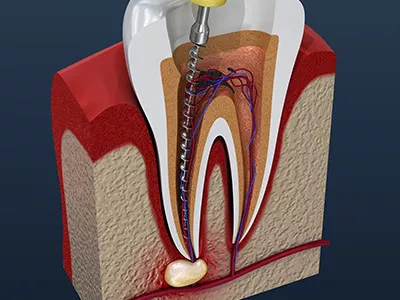

2
Surgeons, not a rotation
Both board certified by the American Board of Oral and Maxillofacial Surgery, both hospital-trained, and both still teaching. The one who operates is the one who calls you afterward.

A two-surgeon referral practice for wisdom teeth, dental implants, extractions and oral pathology. The surgeon who operated is the one who calls afterward.
2
Both board certified by the American Board of Oral and Maxillofacial Surgery, both hospital-trained, and both still teaching. The one who operates is the one who calls you afterward.
3
Local anesthetic, oral sedation, or fully asleep in the office. Dr. Awalt serves as an Anesthesia Evaluator for the Maryland State Board of Dental Examiners, one of the people the state sends to inspect other practices.
Including teeth that are impacted, angled, or still under bone.
A titanium fixture set into the jaw to carry a crown, bridge or denture.
Swelling, abscesses, broken teeth and problems after surgery.
Infection, swelling, a broken tooth, or a problem after surgery is treated as an emergency. Call the office and say that it is urgent.
Waiting weeks in pain. A four-minute consultation. Nobody willing to say what it will cost until afterward. That is what most people brace for, and it is not what patients here describe. Below is what the referral is usually for.

Third molars, impacted, angled, or still under bone.

Surgical removal of teeth that are broken, beyond restoring, or crowding the arch.

For a tooth that has not come through on its own. It is uncovered and a bracket bonded to it, so that your orthodontist can draw it into position.

A titanium fixture set into the jaw to carry a crown, bridge or denture.

Where a tooth has been missing for some time the ridge thins, and an implant has nothing to hold. Grafting rebuilds it.

Adds height beneath the sinus floor in the upper back jaw, so that an implant can be placed safely.

Finding the source and treating it, abscesses and non-vital teeth included.

Removes the infected root tip of a tooth that remains sore after root canal treatment. The tooth itself is kept.

Examination and biopsy of sores, lumps and patches that have not healed on their own.

Swelling, a broken tooth, bleeding, or anything that goes wrong after surgery.
Send the request form or call. Tell the front desk what is going on, and whether a dentist referred you.
An examination, films if they are needed, and a plain account of the options, anesthesia included. Cost is discussed here, not after.
Occasionally the same day. More often scheduled, with instructions for before and after, and a call from your surgeon to follow.
Dr. Awalt has described her approach as resting on trust, communication and compassion, with the options explained plainly and safety ahead of everything else. That is the practice she built, and the one Dr. Charnowitz joined.
Owner and oral & maxillofacial surgeon
Dr. Awalt studied biology as an undergraduate, graduating magna cum laude, then took her dental degree at the University of Pittsburgh School of Dental Medicine. Her hospital residency in oral and maxillofacial surgery was at Woodhull Medical Center in New York.
She has practiced for more than twenty years and teaches as a clinical instructor. She has operated on surgical missions abroad and in volunteer programs closer to home. Her day-to-day work is extractions, dental implants, bone grafting, oral pathology and outpatient anesthesia.

Oral & maxillofacial surgeon
Dr. Charnowitz studied biology at Yeshiva University and took his dental degree at the University of Maryland School of Dentistry, where he was inducted into several honor societies. He completed his residency in oral and maxillofacial surgery at Broward Health Medical Center in Fort Lauderdale, and served as chief resident in his final year.
His scope covers wisdom tooth removal, implant placement, bone grafting and sinus augmentation, surgical extractions, oral pathology, facial trauma, corrective jaw surgery and office anesthesia. Outside it he plays volleyball and pickleball, swims, and is married to Gabby, with whom he has four children. His neckties are a matter of record.
Both surgeons hold membership in


Anesthesia is chosen for the patient and the procedure, not applied by default. Dr. Awalt sits as an Anesthesia Evaluator for the Maryland State Board of Dental Examiners: she is one of the people the state sends to inspect other practices.
For shorter procedures. The area is numbed, you remain fully awake, and you drive yourself home as you would after a filling.
Medication taken beforehand that leaves you calm and drowsy. You stay awake enough to respond. Most of the visit will not stay in memory.
Administered in the office by the surgeon, so that you are asleep throughout. It requires a pre-operative consultation, nothing by mouth after midnight, and an adult to drive you home.
Reviews left on Google by patients who came in for the procedures above.
“Absolutely incredible experience. I have never had a doctor be so available and helpful after a surgery.”
“Dr. Awalt was phenomenal! She took out all 4 of my wisdom teeth and it was a breeze.”
“Bethany recently extracted my infected molar. Her office got me in for an appointment quickly.”
“I had an extraction done by Dr. Awalt, and it could not have been a better experience.”
“Dr. Awalt was very gentle with my mom and considerate of her dental issues.”
“I had a pleasant experience and a successful procedure in getting my wisdom teeth removed.”

The first visit is paperwork, an examination, films if they are needed, and a plan. Occasionally the procedure follows the same day. More often it is scheduled.
If yours is not here, the front desk will answer it on the phone.
Most patients are sent by their general dentist or orthodontist. If you have a referral slip and films, bring them. You are welcome to call without one.
Not during. Every procedure is done under anesthesia, and you choose the depth with your surgeon: local only, oral sedation, or fully asleep. Afterward you are given instructions and a number to call.
It depends on the procedure and your coverage, so the figure comes at the consultation rather than over the phone. The front desk handles insurance and billing and will go through it with you before anything is scheduled.
Credit cards, CareCredit, cash and personal checks. CareCredit lets the cost be spread over instalments.
After local anesthetic, yes, the same as after a filling. After oral sedation or a general anesthetic, no: an adult has to stay during surgery and drive you home.
Call and say what is happening. Infection, swelling, a broken tooth and problems after surgery are treated as emergencies.
Yes. Wisdom teeth and exposure and bonding are common in that age group. Anyone under 18 must be accompanied by a parent or guardian.
Your referral slip and any films, a list of your medications with your physician’s name and number, and your completed insurance forms. Mention pregnancy, chronic or recent illness, heart valves, joint replacements, and any past difficulty with anesthesia.
2 Reservoir Circle, Suite 103, Pikesville, MD 21208. The office is on the ground floor, parking is outside the door, and it is reachable by public transit.

Patients travel to Pikesville from across the metropolitan area, sent by their general dentists and orthodontists. Both surgeons hold hospital appointments in the city, so a complex case need not change hands.
Send the details and the front desk will call to arrange a time. If you are in pain, call instead. It is quicker.
Monday to Friday
8:00 am to 4:00 pm